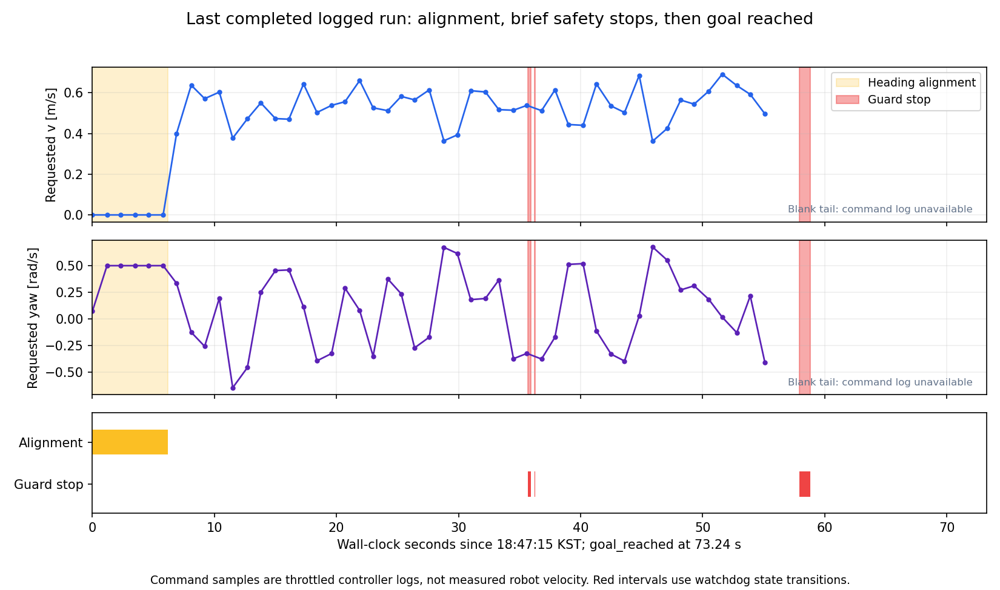

멈칫거림과 장시간 stuck은 구분해야 한다
한편 현재 구현에는 “경로는 유효하지만 실제로 진전하지 못하는 상황”을 감지해 복귀로 전환하는 연결이 없다. 전역 경로 생성기, Pure Pursuit, 충돌 검사가 각각 작동해도 장시간 정체를 스스로 해소한다고 보장할 수 없다.
1. 주행 로그에서 확인한 현상
18:47:15 KST에 시작한 기록을 분석했다. 시간은 wall clock 기준이며, 속도 그래프는 실제 로봇 속도가 아닌 controller의 요청 명령이다.
| 구간 | 관측 | 판단 |
|---|---|---|
| 시작 후 약 6.20초 | aligning_heading, 전진 0, 회전 최대 0.5 rad/s 요청. 이후 추종 상태로 전환. | 방향 정렬 동작. 이 구간 자체를 탈출 실패로 분류하면 안 된다. |
| 주행 중 3회 | predicted_costmap_collision → pass. 약 0.25초, 0.05초, 0.90초, 합계 약 1.20초. | 현재 예측 궤적이 막혀 최종 명령을 차단한 짧은 정지. 개별 장애물/pose의 동시 스냅샷은 없어 정확한 위치 원인은 미확정. |
| 시작 후 약 73.24초 | goal_reached | 해당 로그에서는 목표 도착으로 종료. 장시간 stuck으로 끝난 주행은 아니다. |

2. 코드에서 확인한 정체 구조
전역 경로→Pure Pursuit
/legged/cmd_raw→LiDAR 충돌 검사
/legged/cmd_safe→지도 궤적 검사
/cmd_vel
현재 빠진 연결: 최종 차단 이유 + 실제 pose 진전 → 재계획/복귀 판단.
- 방향 정렬: 목표 lookahead 방향 오차가 1.2 rad(약 69°)를 넘으면 정렬에 진입하고 0.5 rad(약 29°) 아래에서 해제한다. 전진을 먼저 줄인 뒤 제자리 회전을 요청한다. 별도의 정렬 시간 제한/진전 감시는 없다. pure_pursuit_core.cpp
- 재계획: 지도 변경, 경로 무효화, 0.4 m 초과 경로 이탈, 계획 실패 재시도는 처리한다.
/legged/motion_status나 최종 속도 차단을 구독하지 않는다. 경로 위에서 멈춰 있고 지도도 그대로면 stuck만을 이유로 하는 재계획은 없다. planner의 processPendingReplan() - 통과 판정 차이: 전역 경로는 0.45 m 원형 clearance와 셀 여유를 적용한다. 최종 검사는 1.0 × 0.9 m 사각형을 현재 자세 및 1초 예측 회전 궤적에 적용한다. 사각형 모서리까지 거리는 약 0.673 m다. 따라서 0.45 m clearance만으로 모든 yaw에서 사각형 통과를 보장하지 않는다. 이 차이가 이번 개별 정지의 원인이라는 동시 측정은 아직 없다.
- 현재 실행본: watchdog PID 270173의 런타임 파라미터에
regulate_approach가 없다. 디스크의 새 감속 구현이 적용되기 전 프로세스다. 현재 실행본은 예측 충돌 시 명령 전체를 0으로 만든다. 디스크 구현은 일부 예측 충돌에서 같은 곡률을 유지한 감속 후보를 검사하지만, 후진/회전 탈출 생성기는 아니다. 실행 파라미터
Planner는 cost 253 이상을 통과 불가로 보며, 최종 guard는 254/255 장애물·unknown과 사각형의 중첩을 검사한다. 단순히 inflation 영역의 색깔만 보고 모든 정지를 같은 원인으로 분류할 수 없다.
3. 앞선 장시간 정지와 이번 기록의 차이
앞선 18:07 정체 관측에서는 최종 명령 700개 모두 0이었고, 상태 메시지 66개 중 57개가 costmap_collision이었다. 별도 지도 스냅샷에는 정지 사각형 아래 lethal 셀 151개가 있었다. 이는 지도/localization 기준 중첩이며 실제 몸체 접촉을 입증하지는 않는다. 그 기록은 최근 완료된 주행과 다른 구간이다.
첫 50초 기록과 추가 40초 기록 모두 실제 /clock, odometry, 충돌 점군, 동적 TF를 받지 못했다. 추종 상태는 idle, 정지 사유는 collision_cloud_timeout이었다. 중간에 ROS graph에서 발행자가 보였지만, 뒤의 기록에서도 데이터 수신은 없었다. 새 주행의 stuck을 재현했다고 주장할 수 없으며 Gazebo 일시정지 여부도 이 결과만으로 확정하지 않는다.
최종 /cmd_vel 발행자는 watchdog 하나로 확인했다. 과거 테스트 명령의 중복 발행 문제는 이번에 확인되지 않았다.
4. 다음 수정의 우선순위
- 같은 장애물 구간에서 감속 구현 적용 전후 비교. 현재 정지는 예측 충돌 즉시 차단이다. 이미 작성된 접근 감속의 효과를 먼저 확인한다. 현재 명령 궤적을 짧게 검사하는 감속만으로 회피·탈출이 완성되지는 않는다.
- 실제 진행 감시와 차단 이유 연결. 경로를 따라 전진한 거리, heading 오차 감소, 최종 출력 차단 시간을 함께 본다. 예를 들어 수 초간 진전이 없으면 blocked로 전환하고 재계획한다. 시간/거리 임계치는 주행 데이터로 정하며 정상적인 방향 정렬과 목표 대기를 제외한다. FAST-LIO twist가 0인 기존 구현 때문에 pose 변화도 함께 사용해야 한다.
- 충돌 없이 실행 가능한 제한된 복귀 후보. 재계획만으로 해결되지 않으면 짧은 회전/후진 등의 후보를 현재 지도·센서·height 조건과 전체 사각형 궤적으로 검사한다. 현재 footprint 자체가 장애물과 겹친다고 판단되면 자동으로 강제 탈출시키지 않고 정합/실제 점유를 확인한다. 시간·거리·시도 횟수를 제한하고 같은 목표로 복귀한다.
현재 증거로는 컨트롤러를 DWB로 교체하는 결론보다, 차단 상태를 상위 판단에 전달하고 실행 가능한 경로·복귀를 연결하는 것이 우선이다. 이번에는 주행 코드나 파라미터를 바꾸지 않았다.
수치 요약 · 첫 수신 기록 · 추가 수신 기록 · 동시 검사 기록 · 로그 분석 재현 코드